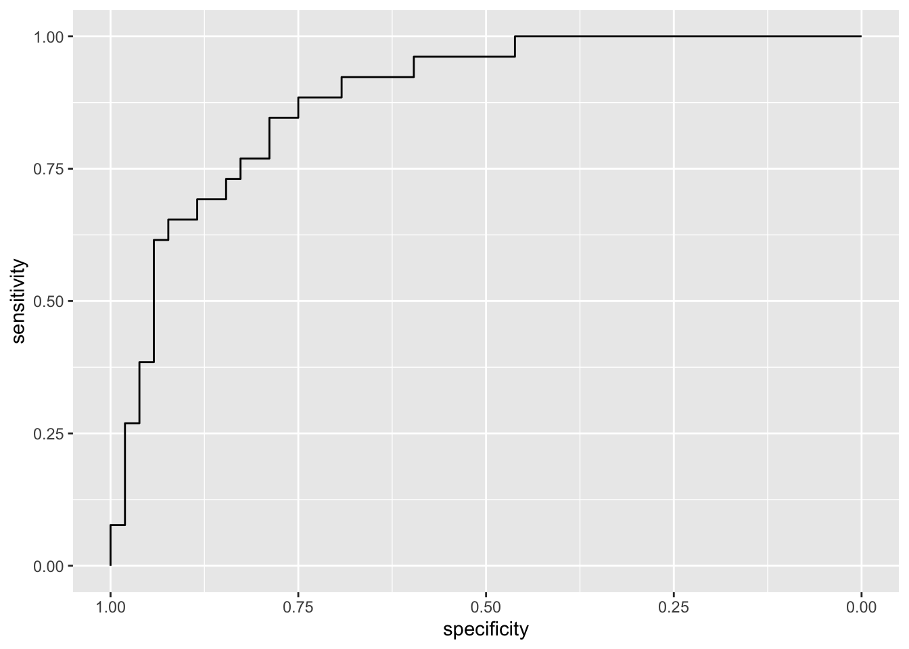
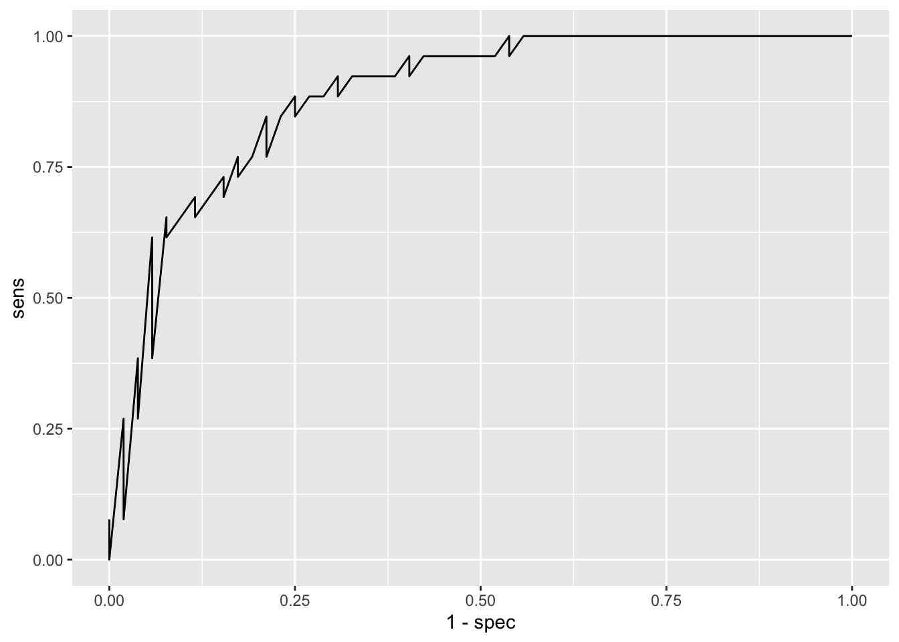

── Conflicts ────────────────────────────────────────── tidyverse_conflicts() ──
✖ dplyr::filter() masks stats::filter()
✖ dplyr::lag() masks stats::lag()
✖ purrr::lift() masks caret::lift()
ℹ Use the conflicted package (<http://conflicted.r-lib.org/>) to force all conflicts to become errors
# we remove rows with NA valuesdf <-na.omit(PimaIndiansDiabetes2)
pedigree: Diabetes pedigree function (metric of genetic predisposition)
age: Age (years)
diabetes: detected diabetes (yes or no) –> target variable
summary(PimaIndiansDiabetes2)
pregnant glucose pressure triceps
Min. : 0.000 Min. : 44.0 Min. : 24.00 Min. : 7.00
1st Qu.: 1.000 1st Qu.: 99.0 1st Qu.: 64.00 1st Qu.:22.00
Median : 3.000 Median :117.0 Median : 72.00 Median :29.00
Mean : 3.845 Mean :121.7 Mean : 72.41 Mean :29.15
3rd Qu.: 6.000 3rd Qu.:141.0 3rd Qu.: 80.00 3rd Qu.:36.00
Max. :17.000 Max. :199.0 Max. :122.00 Max. :99.00
NA's :5 NA's :35 NA's :227
insulin mass pedigree age diabetes
Min. : 14.00 Min. :18.20 Min. :0.0780 Min. :21.00 neg:500
1st Qu.: 76.25 1st Qu.:27.50 1st Qu.:0.2437 1st Qu.:24.00 pos:268
Median :125.00 Median :32.30 Median :0.3725 Median :29.00
Mean :155.55 Mean :32.46 Mean :0.4719 Mean :33.24
3rd Qu.:190.00 3rd Qu.:36.60 3rd Qu.:0.6262 3rd Qu.:41.00
Max. :846.00 Max. :67.10 Max. :2.4200 Max. :81.00
NA's :374 NA's :11
Perform Exploratory Data Analysis
You can use DataExplorer hereas we’ve done before!
Train logistic regression
#split train and test datasetstraining.samples <- df$diabetes |>createDataPartition(p =0.8, list =FALSE)train.data <- df[training.samples, ]test.data <- df[-training.samples, ]
# Fit the modelmodel <-glm(diabetes ~., data = train.data, family = binomial)summary(model)
Call:
glm(formula = diabetes ~ ., family = binomial, data = train.data)
Coefficients:
Estimate Std. Error z value Pr(>|z|)
(Intercept) -9.8076010 1.3548339 -7.239 4.52e-13 ***
pregnant 0.0643055 0.0637425 1.009 0.3131
glucose 0.0353297 0.0062125 5.687 1.29e-08 ***
pressure 0.0009336 0.0129969 0.072 0.9427
triceps 0.0125552 0.0190010 0.661 0.5088
insulin -0.0006715 0.0014681 -0.457 0.6474
mass 0.0650879 0.0307745 2.115 0.0344 *
pedigree 1.0422578 0.4648838 2.242 0.0250 *
age 0.0407650 0.0218222 1.868 0.0618 .
---
Signif. codes: 0 '***' 0.001 '**' 0.01 '*' 0.05 '.' 0.1 ' ' 1
(Dispersion parameter for binomial family taken to be 1)
Null deviance: 398.80 on 313 degrees of freedom
Residual deviance: 280.07 on 305 degrees of freedom
AIC: 298.07
Number of Fisher Scoring iterations: 5
round(exp(coef(model)),2)
(Intercept) pregnant glucose pressure triceps insulin
0.00 1.07 1.04 1.00 1.01 1.00
mass pedigree age
1.07 2.84 1.04
The exponential of the slope coefficient (exp(B)) tells us the factor by which odds increase if the independent variable increases by one unit.
One unit increase in glucose levels increase the odds of diabetes by 1.04, this is a 4% increase in the odds of being diabetic (1.04 * odds)
Provide the interpretation for the following: - pregnant - pressure - pedigree
Make predictions and check general accuracy
# Predictionsprobabilities <- model |>predict(test.data, type ="response")# select the classification thresholdpredicted.classes <-ifelse(probabilities >0.5, "pos", "neg")
Model graph
train.data |>mutate(prob =ifelse(diabetes =="pos", 1, 0)) |>ggplot(aes(glucose, prob)) +geom_point(alpha =0.2) +geom_smooth(method ="glm", method.args =list(family ="binomial")) +labs(title ="Logistic Regression Model", x ="Plasma Glucose Concentration",y ="Probability of being diabete-pos" )
Confusion Matrix and Statistics
Reference
Prediction neg pos
neg 47 5
pos 9 17
Accuracy : 0.8205
95% CI : (0.7172, 0.8983)
No Information Rate : 0.7179
P-Value [Acc > NIR] : 0.02581
Kappa : 0.58
Mcnemar's Test P-Value : 0.42268
Sensitivity : 0.8393
Specificity : 0.7727
Pos Pred Value : 0.9038
Neg Pred Value : 0.6538
Prevalence : 0.7179
Detection Rate : 0.6026
Detection Prevalence : 0.6667
Balanced Accuracy : 0.8060
'Positive' Class : neg
ROC & AUC
library(pROC)
Type 'citation("pROC")' for a citation.
Attaching package: 'pROC'
The following objects are masked from 'package:stats':
cov, smooth, var
#creates an object with all sorts of diagnostics roc <-roc(as.factor(test.data$diabetes), probabilities)
Setting levels: control = neg, case = pos
Setting direction: controls < cases
pROC::ggroc(roc)

# manual option sens <- roc$sensitivities #include sensitivities in test dataspec <- roc$specificitiesggplot(data.frame(sens,spec), aes(x=1-spec, y=sens)) +geom_line()

Area Under the Curve
auc(test.data$diabetes, probabilities)
Setting levels: control = neg, case = pos
Setting direction: controls < cases
Area under the curve: 0.8846
Exercise
Evaluate the model using the train set. How do performance metrics change?
# Predictionsprobabilities <- model %>%predict(train.data, type ="response")# select the classification thresholdpredicted.classes <-ifelse(probabilities >0.5, "pos", "neg")